Documentation
Installation
Use HotA 1.8.1. The patch checks the installed editor and HotA files. A failed compatibility check can disable a single feature without affecting the other ones. See Help → Patch Diagnostics for the reason.
- Download.
- Extract the release ZIP and place
mapmakers_patch.dll,mapmakers_patch_launcher.exeandmapmakers_editor.exebesideh3hota_maped.exe. The launchers need write access to this game folder. - Open
mapmakers_patch_launcher.exeand choose Launch patched editor. For direct launch, double-clickmapmakers_editor.exe.
To use the DLL without either launcher, keep it beside the editor and append /p:mapmakers_patch.dll to a shortcut for h3hota_maped.exe.
Updates
The launcher checks for patch updates when opened. The patched editor checks in the background and asks before opening the launcher for an update. You can also choose Help → Check for updates.
Choose Install update. If an editor is running, save your work, close it normally and click Retry. The launcher updates the DLL and both patch launchers, not Heroes III, HotA or HD Mod. It never forces the editor to close.

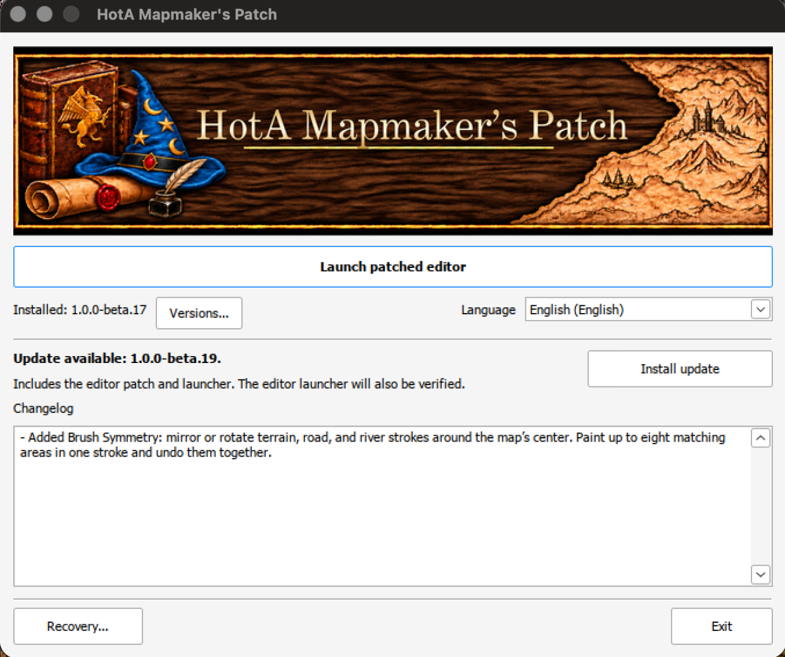
Pathfinding
Open from the toolbar or press Ctrl+Shift+P. Click a start and destination, then compare the lowest travel cost with the earliest arrival. In the movement profile, adjust the speed of the slowest creature, Logistics, hero equipment and more to see how different setups affect the journey. Route alternatives show other ways through the map.
For multiple stops, enable Plan with waypoints, click the stops in order and choose Calculate.

Battlefield Explorer
Open from the toolbar or press Ctrl+Shift+B. Click a tile to preview its battlefield. Use Search to filter by obstacle layout, bottlenecks and other battlefield metrics, then use Display for map highlights or supported heatmaps.
Save named favourites with notes, jump back to their coordinates and export battlefield screenshots as PNG.

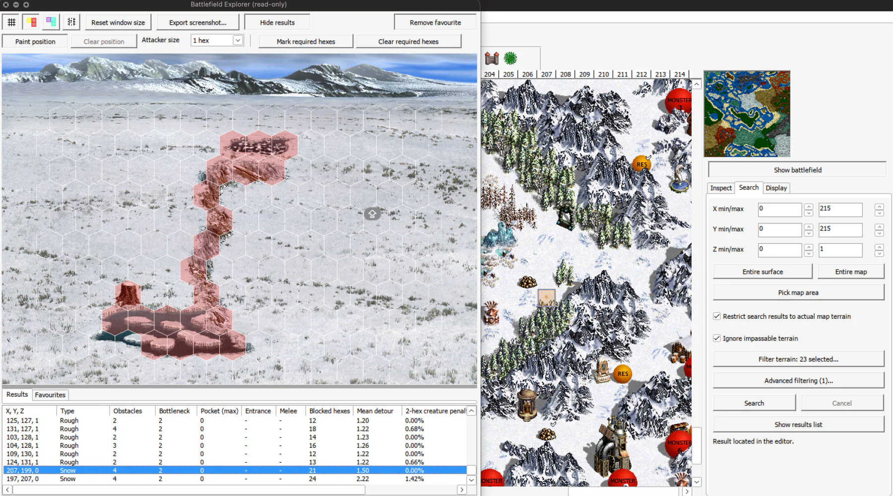
Visibility
Open from the toolbar or press Ctrl+Shift+V. Choose a player and whether to include allies, or pick individual vision sources. A ghost hero is a temporary token that reveals tiles as a hero would, without adding a real hero to the map.
Preview shroud, Cover of Darkness, hero patrol areas and single-cast Dimension Door range.

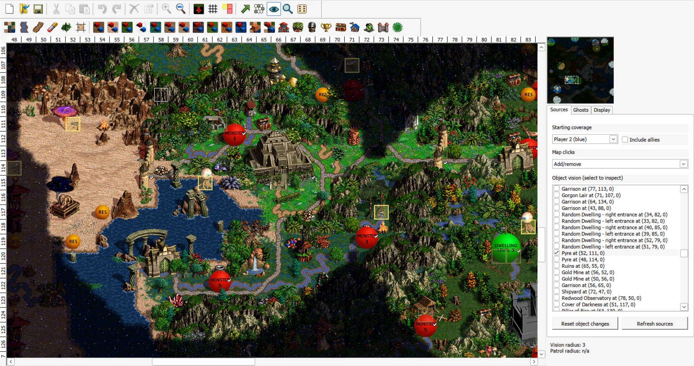
Advanced Find
Open from the toolbar or press Ctrl+Shift+F. Search both levels for artifacts, spells, secondary skills, heroes, creatures, quests, resources, bonuses or text. Choose a source or category to narrow the results; click an object to locate it, or press Enter to open its properties where supported.
The Text tab searches authored names, signs, quest and event messages, rumours, the map title and description, and other supported text fields.
The tool inspects supported extended-event rewards and text without running events or evaluating their conditions. Advanced quest conditions are not searched. A partial result means some fields could not be read.

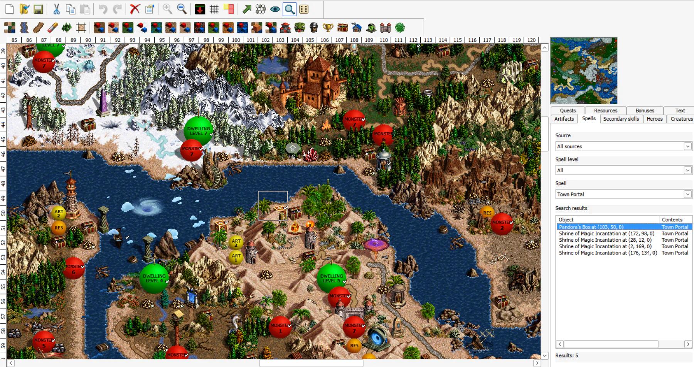
Randomness inspector
Open from the toolbar or press Ctrl+Shift+R. Pick a highlighted random artifact or shrine to see its possible pool range and proven exclusions. In Pools, select a pool to find sources that may or must draw from it.
The tool does not predict rolls, estimate probabilities, or search extended events.

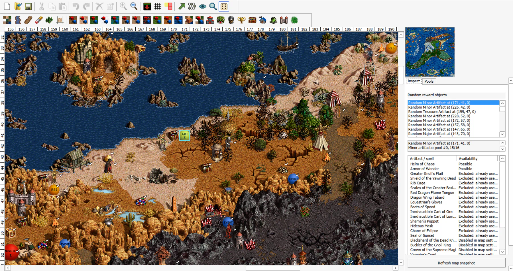
Multi-brush
Open Multi-brush from the toolbar or the Tools menu. Mirror your strokes left to right, top to bottom, diagonally, or across multiple axes. Add a 90° or 180° rotation if you like. Use the map center as the pivot or pick a custom pivot with half-tile precision. Guides on the map and minimap show the pivot and mirroring axes.
Custom rotation supports up to 36 placements including the original. Space them evenly around a full turn or set a fixed angle, in either direction. A few placements can make stars or petal shapes. More placements are useful for drawing circles and rings.
In Advanced Settings → Adjustments, use Copy scale to resize the copied strokes, Copy spread to move their centers closer to or farther from the pivot, and Offset X / Y to shift them by a number of tiles. Scale does not change the width of roads, rivers or exact-tile strokes.
For a row without turning, choose Rotation → No rotation, set Copies to 3 and Offset X to 2. With the default Chained behavior, each copy is two tiles farther right than the last.

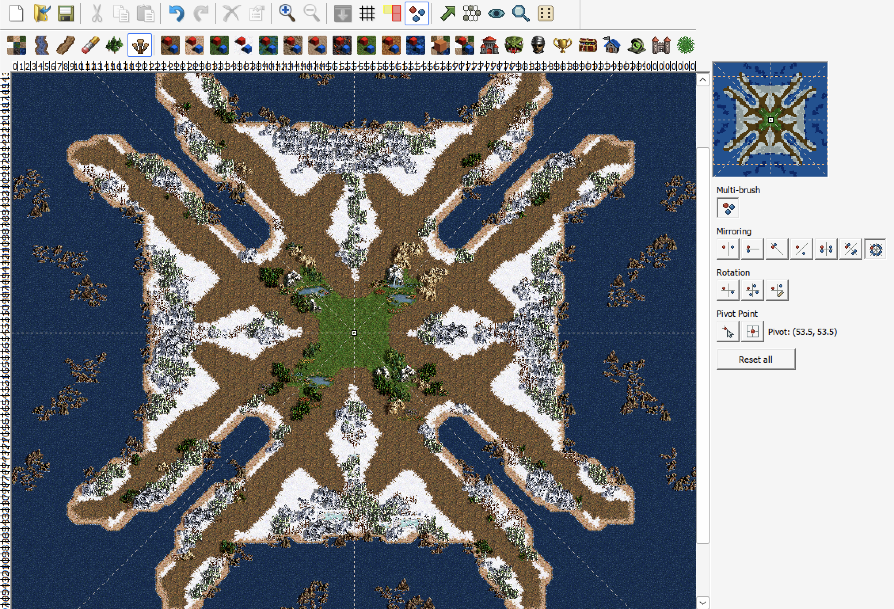
Multi-brush works with terrain, roads, rivers, erasing, obstacle marks and Exact Tile Spriting. Freehand terrain appears as you drag. Area brushes apply on release. One Undo reverses the original stroke and every copy. Use the toggle next to Passability to pause or resume Multi-brush without losing your settings.
Terrain, roads and scenery
Adapt objects and rivers
Turn on Adapt objects and rivers above the Terrain brush choices. When a brush or fill changes the terrain type, compatible scenery, object appearances and rivers adapt alongside it. One Undo reverts the terrain and its adaptations. The toggle starts off each time you open the editor.
Connected Fill
Choose Tools → Terrain → Connected Fill or press N. Select the new terrain, then click the area to replace. Tiles of the clicked terrain count as connected if they share an edge or corner. With Multi-brush, each copy starts its own fill; one Undo reverts them all.
Ellipse Brush
Choose Tools → Terrain → Ellipse Brush or press B, then drag to draw an ellipse. Hold Shift for a circle or Alt to draw outward from the starting tile. Release to paint.
Rectangle Brush
The Area Brush is now Rectangle Brush (V). Drag from corner to corner, hold Shift for a square, or hold Alt to draw from the center. Both shape brushes preview Multi-brush copies before you release.
Regenerate Objects
In the Obstacle tool, mark the area you want to refresh, then choose Regenerate Objects or press Shift+G. This replaces existing scenery in the marked area and updates compatible object appearances without blocking previously open tiles.
Connected Replace for roads and rivers
Turn on Connected Replace above the type swatches in the Road or River tool. Pick the new type and draw as usual. When your stroke touches a road or river of another type, the connected section switches to the selected type and you can keep drawing. Edge contact counts, but corner-only contact does not. Matching river deltas change too. One Undo reverts the whole stroke.
Editing utilities
Copy, Cut and Paste Map Area
Select a rectangle to copy or move ground and objects separately. Cut replaces the selected ground with your chosen terrain and can clear references to cut objects elsewhere on the map. Paste does not restore those references.
Object ordering
Right-click an object or use Edit to move it forward or backward one layer, bring it to the front or send it to the back without moving it to another tile.

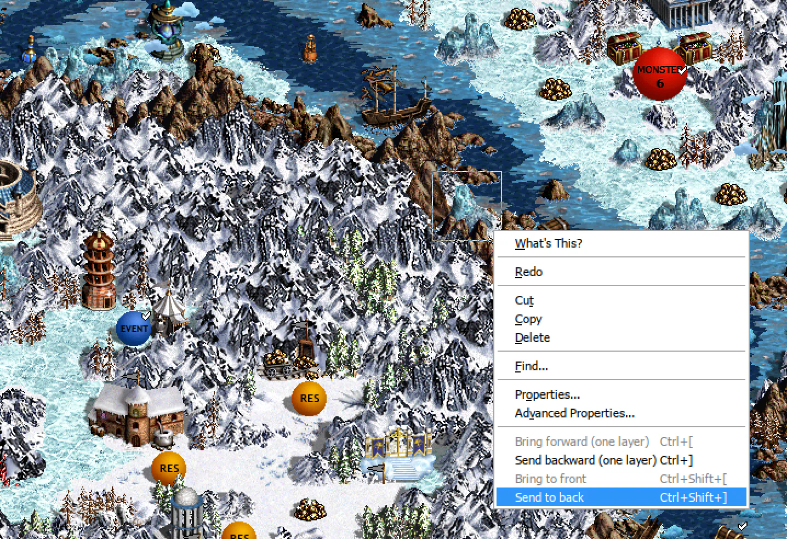
Fill and resize
Fill the active level with terrain, or use Tools → Resize Map to make a map smaller or larger. Make a copy before shrinking a map.

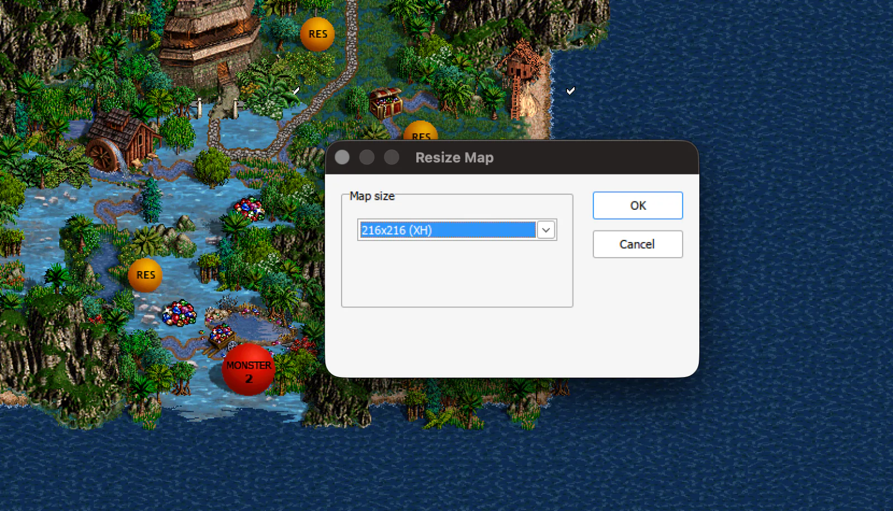
Map and minimap images
Export a selected area or an entire map level. The editor saves an uncompressed BMP, so large exports can take up a lot of space. You can also save a terrain-only minimap BMP or import one that matches the map dimensions.

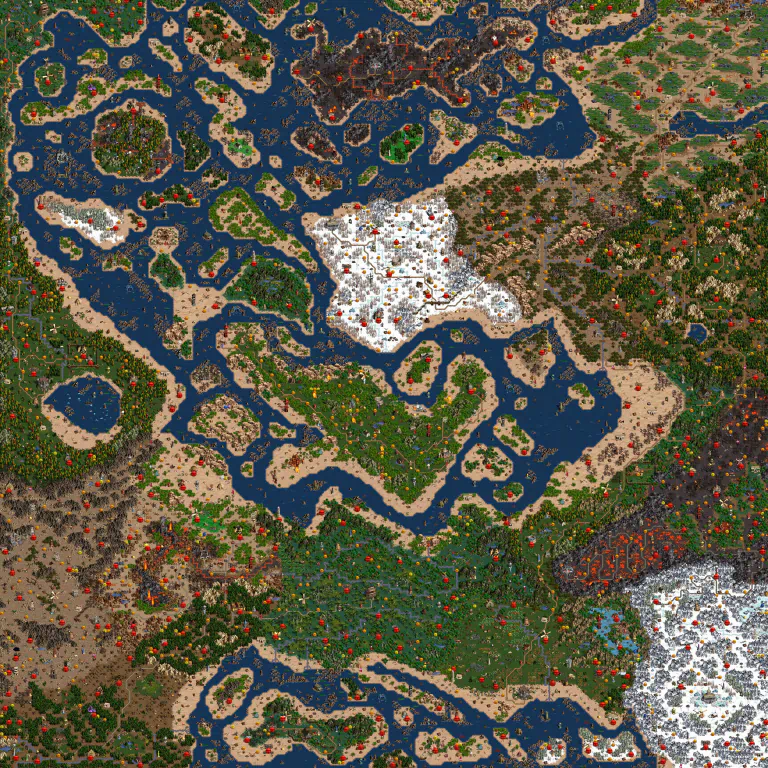
Open full-size map (5.4 MB)Editor dialogs
Monster quantities
Random shows a creature’s minimum and maximum starting count. Custom count and Value stay in sync: edit one to see the corresponding number in the other.
For Random Monsters, use the reference dropdown to preview the Value for a given count or see which creatures are possible at a chosen Value. To use AI value instead of Value, go to Tools → Patch Options.

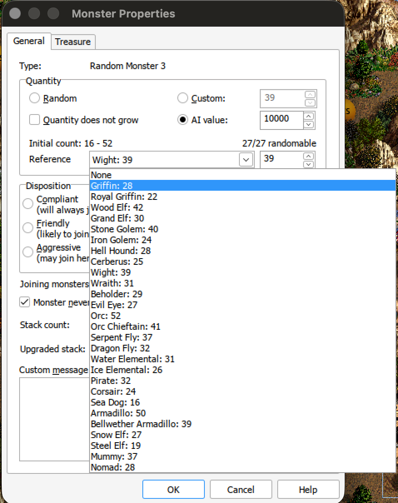
Hero portraits
Click a hero’s portrait to choose a new one from a visual grid. Use the Heroes page of Map Specifications to change hero availability in bulk.

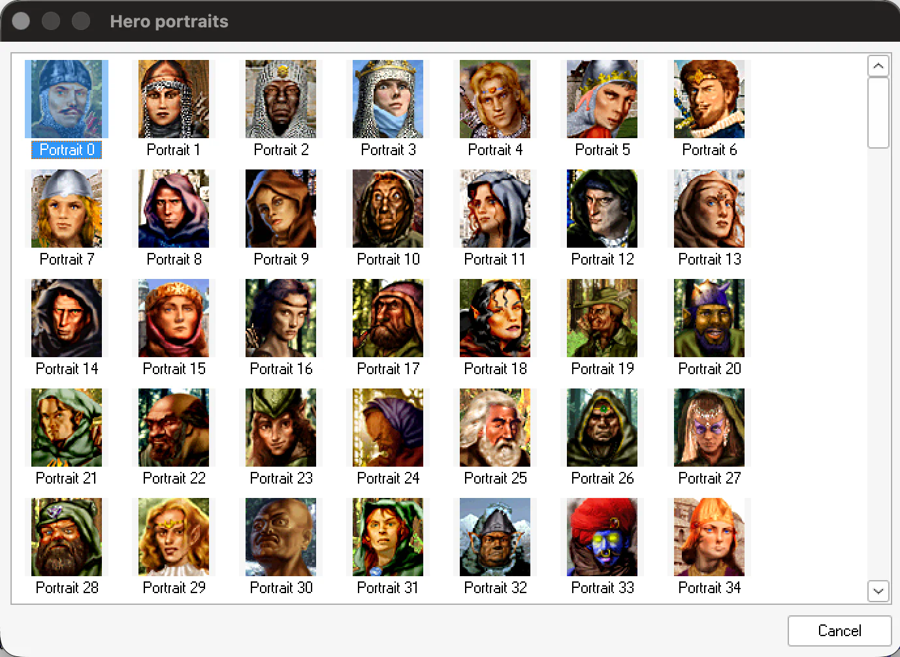
Calendar dates
Supported timed events and time limits display dates as month, week and day instead of a day number.

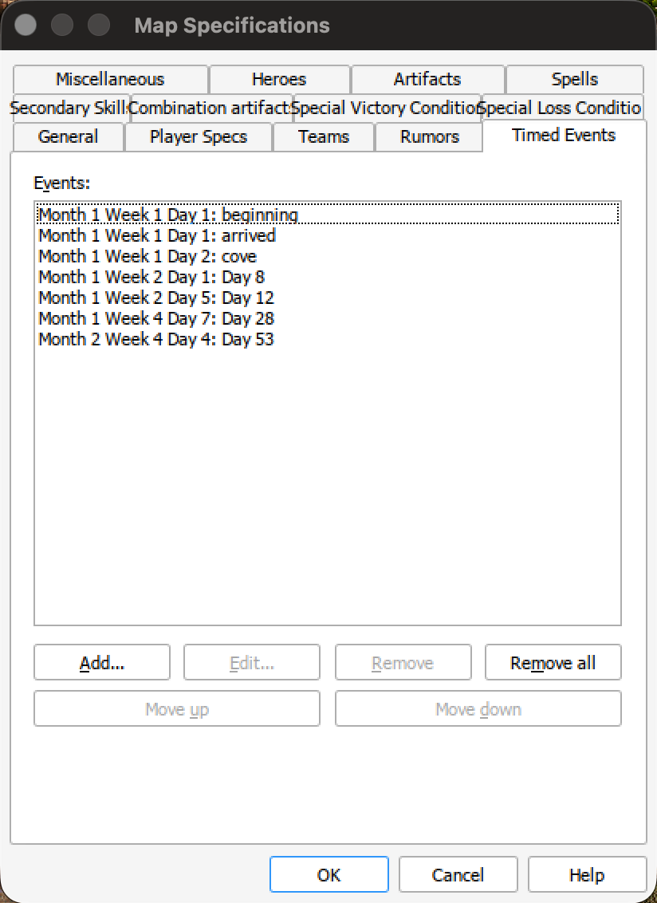
The patch also enlarges the Open Map dialog and message boxes for supported events, Pandora’s Boxes and Seer’s Huts. The recent-map list holds up to ten maps.
Patch Options
Use Tools → Patch Options to set default monster properties, choose Auto, English or draft Russian patch text, or switch monster quantity previews to AI value. The launcher shares the saved language preference; native HotA text is unchanged.
Non-standard editor features are off by default. This opt-in unlocks Advanced Properties for supported objects, Exact Tile Spriting and Fog, custom map sizes, single-square painting, exact or partially smoothed paste/import, relaxed placement and road edges, and fewer than four secondary skills.
Maps with Fog or non-standard dimensions need the patched editor to open safely. Turning the option off does not convert existing maps. Use Validate Map to check for those compatibility reasons.
Reporting issues
Contact alderski on the HotA Discord server. Include the patch version, relevant Help → Patch Diagnostics rows, the map name, coordinates and steps to reproduce. Ask the author before sharing a private map.